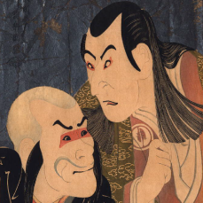
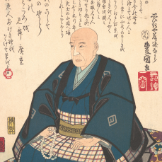
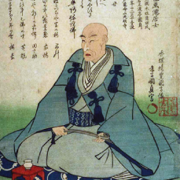
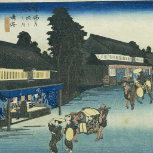
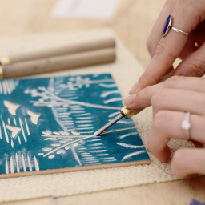
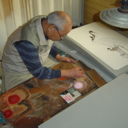
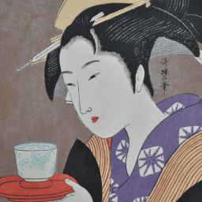

El Ukiyo-e (浮世絵) es un género de grabados realizados mediante
xilografía o técnica de grabado en madera, producidos en Japón entre los siglos XVII y XX,
entre los que se encuentran imágenes paisajísticas, del teatro y de zonas de alterne.
Artistas importantes

Tōshūsai Sharaku
Tōshūsai Sharaku
(東洲斎写楽)
Es considerado como uno de los grandes maestros del grabado japonés ukiyo-e. Se desconoce su verdadero nombre

Utagawa Hiroshige
Utagawa Hiroshige
(歌川広重)
Fue un pintor japonés. Perteneció a la Escuela Utagawa, una de las más reputadas del estilo ukiyo-e.

Utagawa Kunisada
Utagawa Kunisada
(歌川 国貞)
también conocido como Utagawa Toyokuni III (三代歌川豊国?) (1786-1864) fue un pintor japonés de la escuela Utagawa,
Creación del ukiyo-e

El artista elabora con tinta un dibujo principal.

Los artesanos pegan este dibujo, mirando hacia abajo en una plancha de madera

Esta plancha se entinta y se imprime, elaborándose así copias muy semejantes al dibujo original.

La impresión final contiene las impresiones de cada una de las planchas
CONTACTO
Comparte con nosotros tus datos de contacto y te enviaremos
toda la informacón de los medios de
pagos.